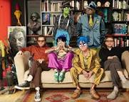
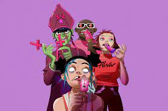

Gorillaz have had many good hits over the years, here is some of the most popular: "Feel good Inc."" total plays; 1,157,497,868 Daily plays ; 651,445 "Clint Eastwood" total plays; 677,989,113 Daily plays; 326,991 "On Meloncholy Hill" total plays ;482,837,455 Daily plays;251,711
.jpeg)
Phases
Phase 1; Celebrity Take Down (1998 -2002) Phase 2: Slowboat to Hades (2004-2008) Phase 3: Escape To Plastic Beach (2008-2013) Phase 4: We Are Still Humanz (2013-2018) Phase 5: No More Unicorns Anymore (2018-2019) Phase 6: Wish You Wear Ear (2019-2021) Phase 7: Cracker Island (2021-?)
Gorillaz
Gorillaz are an English virtual band formed in 1998 by musician Damon Abarn and artist Jamie Hewlett, from London. The band primarily consists of four fictional members: 2-D (vocals, keyboards), Murdoc Niccals (bass guitar), Noodle (guitar, keyboards, vocals), and Russel Hobbs (drums).
About
Gorillaz was first made in 1998, by Damon Albarn after leaving Blur. They released their first song in 2000 called “Tomorrow Comes Today,”. This was later added to their first album, Gorillaz, in 2001. Gorillaz have since released eight studio albums, three compilation albums, 11 extended plays, one remix album, and 46 singles. The band has came up with characters fo their “lore”. These characters are drawn by Jamie Hewlett. The characters go by the names; Noodle (guitarist), Murdoc (bassist), 2D (singer) and Russel (Drummer). Other characters have made an appearance throughout Gorillaz too. Such as Ace ( replaced Murdoc in the Now Now album) , Paula (2D’s ex girlfriend, ex guitarist)
